CartoCSS
@tmcw
MapBox
CartoCSS
language
✍ for styling maps
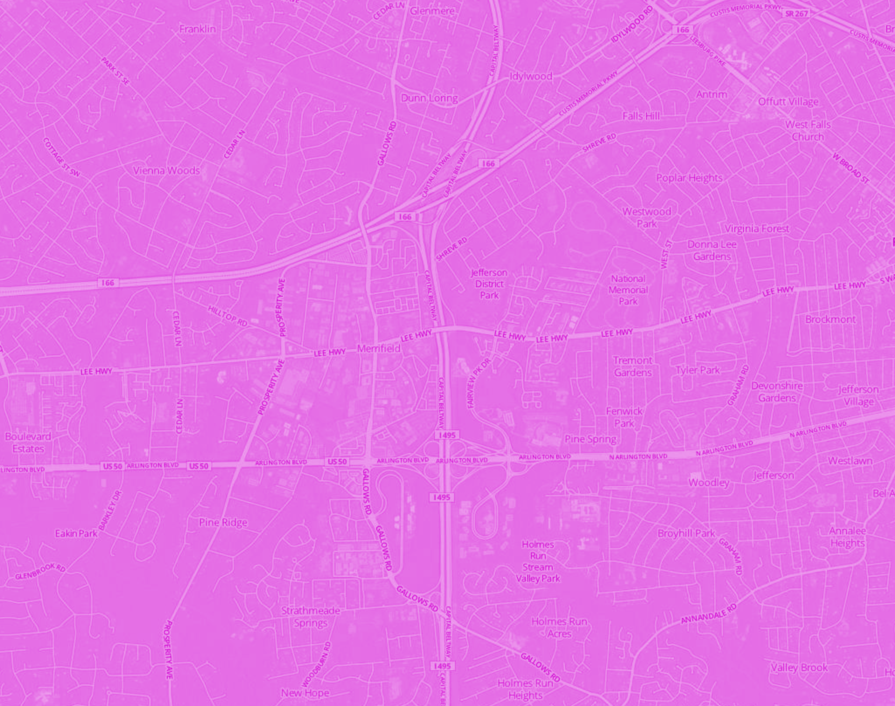MapBox

CartoDB
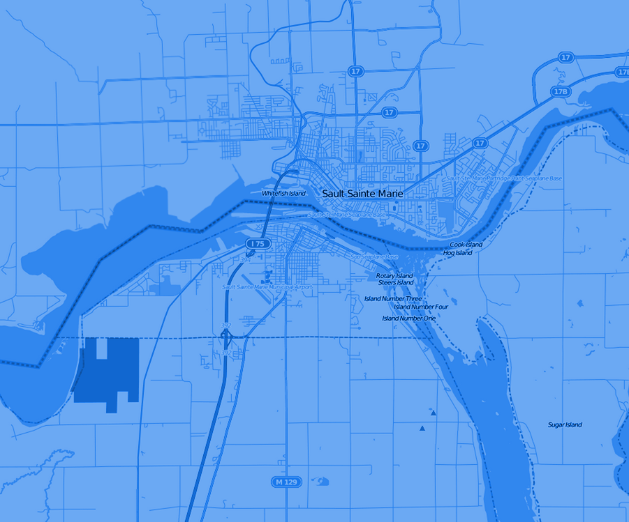OpenStreetMap
☞ why
// hello this
// is carto
#dots {
marker-width:1;
}easy?
// i am monospace
#dots {
marker-width:1;
}// this is coding
#dots {
marker-width:1;
}why☞
CartoCSS is code
⌘C
⌘V
we learn with ⌘v
why☞
CSS
Cascadenik
Gumption Trap
Can I Approach This?
Resemblance
#world {
::foo {
polygon-opacity:1;
}
marker-width:[foo];
}i am only pretending
do not be afraid
do not be afraid
stuff that is not css
.nesting { .selectors { } }(from less.js but not everything from less.js and i do not advise or disadvise the use of less.js but cloudhead did write a darn fine css parser)
〉git shortlog -s -n
591 Tom MacWright
244 Konstantin Käfer
97 Dane Springmeyer
67 Young Hahn
23 AJ Ashton
12 Konstantin Käfer
8 Will White

why is this so hard?
style is multi-dimensional
#foo { color: red; }
// ENTER THE TIME DIMENSION
#foo:hover { color: black; }
scale
(zoom)
(fathom)
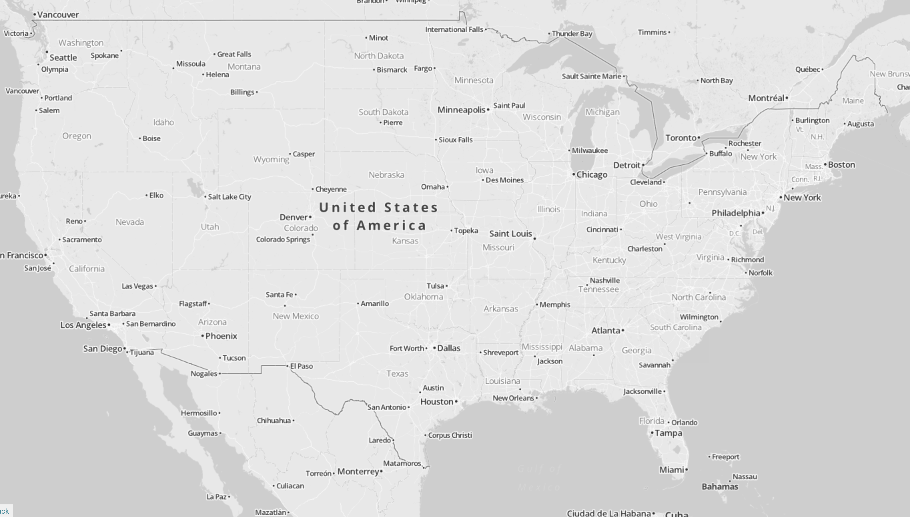
#foo[zoom > 3] {
color: red;
}
@minfoo: 3;
#foo[zoom <= @minfoo] {
color: red;
}
zindex
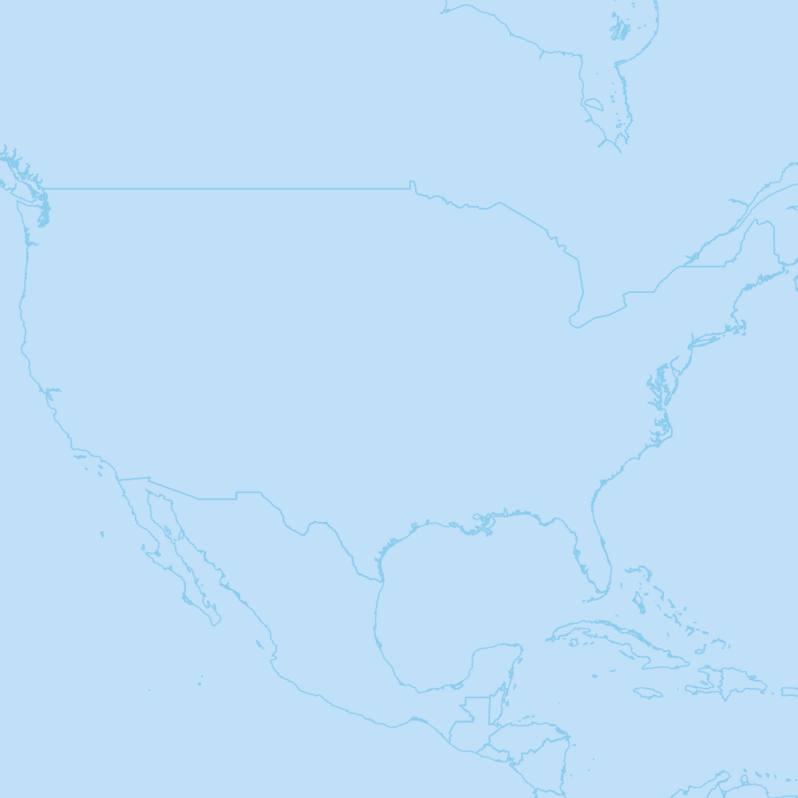
(stuff on top of each other)
(road trip)
#a { marker-width: 2; }
#b { marker-width: 3; }
#c { marker-width: 4; }
#d { marker-width: 5; }
roads
// cascadenik
#road {
line-width: 2;
outline-width: 4;
}
// carto
#road {
line-width: 2;
::outline {
line-width: 4;
}
}
⎈
ART
⎈
(stuff made with carto)
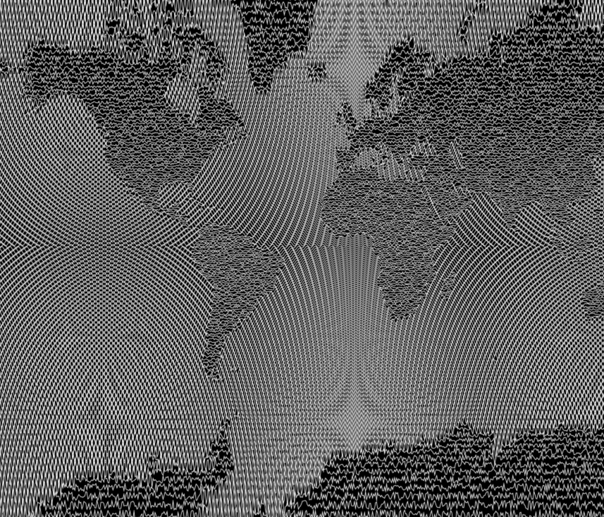
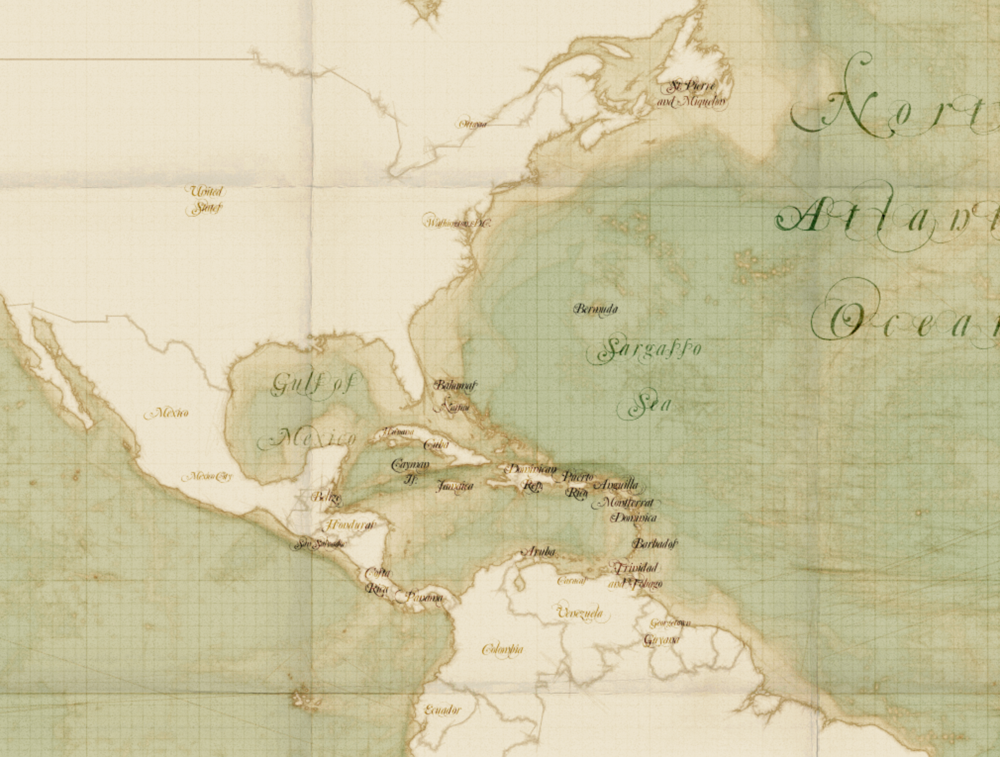
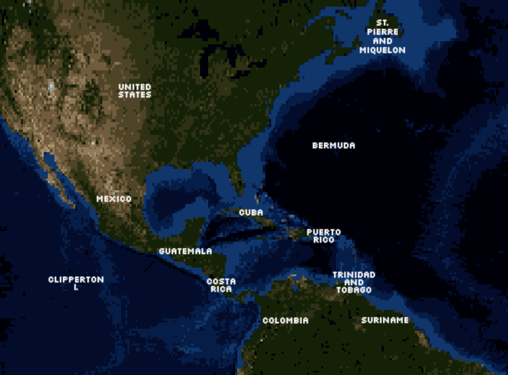
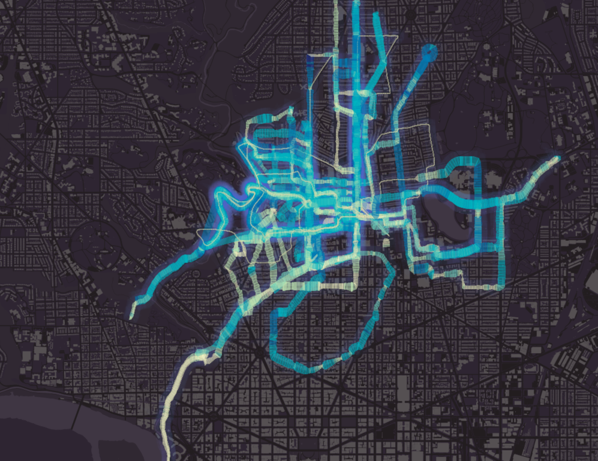
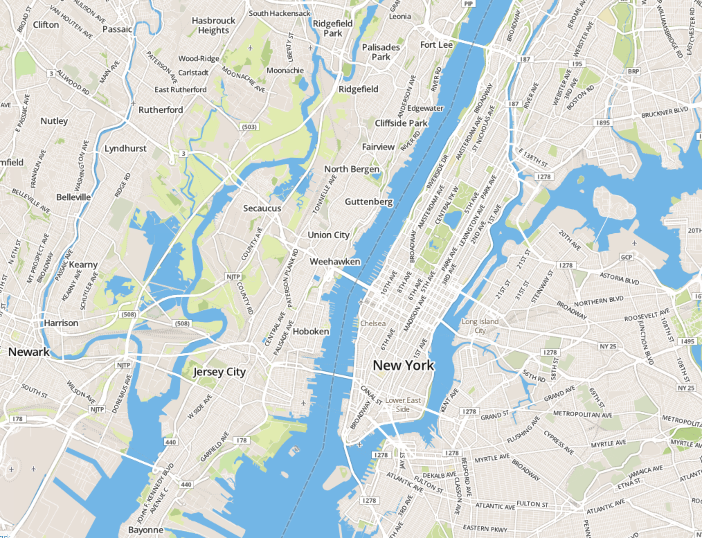
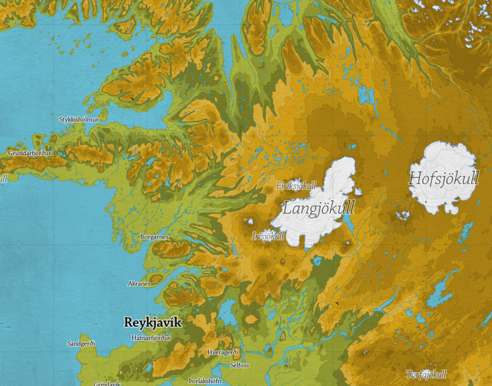
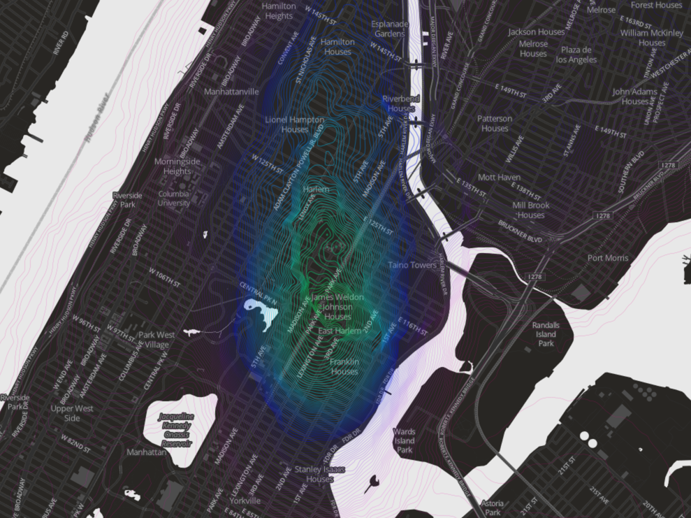